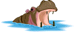

Welcome to the Hippopotamus's Mouth
As you may expect from their portly profiles, the mouth of a hippopotamus
has a lot of work to do. Not only can they consume vast amounts of grass
reeds and other plants, but they can also defend themselves quite well with their
large protruding teeth.


Please press on me to return to my whole body